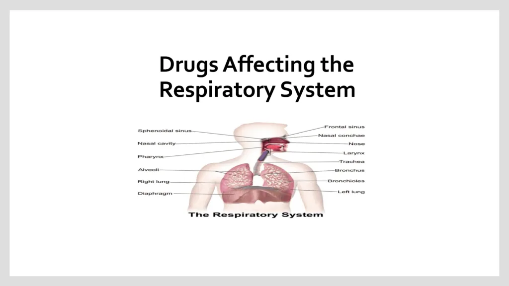

Expanded Nursing Uganda Explanation
Drugs Acting on the Respiratory System should be reviewed through safe maternal and newborn assessment, early recognition of danger signs, respectful communication and timely referral. Connect the definition to vital signs, bleeding, fetal or newborn wellbeing, patient education and local protocol requirements.
01 Drugs Acting on the Respiratory System
Drugs used in the treatment of respiratory tract disorders include:
- Drugs for Asthma
- Drugs for Allergic Rhinitis
- Drugs for Cough
- Drugs for Common Cold and Flu
02 Drugs Used in the Treatment of Asthma
Asthma is a chronic disease of the airways characterized by inflammation and reversible bronchospasm. It is associated with symptoms such as wheezing, breathlessness, chest tightness, and cough. Drugs used in the treatment of asthma are broadly divided into two categories:
- Bronchodilators
- Anti-inflammatory drugs
Table 1: Classification of Anti-Asthmatic Drugs
- Class Examples
- Bronchodilators Beta2 agonists, Xanthine derivatives, Anticholinergics
- Anti-inflammatory drugs Corticosteroids, Mast cell stabilizers, Leukotriene receptor antagonists
Beta2 agonists promote bronchodilation by stimulating beta2 receptors in bronchial smooth muscles. They are further divided into short-acting and long-acting beta2 agonists.
- Short-acting beta2 agonists such as salbutamol and terbutaline have a rapid onset and short duration of action. They are recommended for the treatment of acute asthma attacks.
- Long-acting beta2 agonists such as salmeterol and formoterol have a delayed onset and long duration of action. These drugs are usually combined with inhaled corticosteroids such as budesonide for the long-term control of chronic asthma.
Salbutamol
Available Preparations:
- Inhaler: 100 mcg
- Nebulized solution: 5 mg/ml
- Syrup: 2 mg/5 ml
- Tablets: 4 mg
Available Brands : Ventolin®, Vental®, Kamvent®
Pharmacokinetics: Salbutamol is readily absorbed from the gastrointestinal tract, metabolized in the liver, rapidly excreted in the urine as metabolites and as unchanged drug, and a small amount is excreted in the feces.
Indications :
- Prophylaxis and treatment of asthma
- Chronic obstructive pulmonary disease
- Arrest premature labor
Contraindications:
- Hypersensitivity to salbutamol
- Eclampsia and severe preeclampsia
Dosage :
Oral :
Adults : 4 mg 3-4 times daily, max single dose 8 mg
Children :
- 7-12 years : 2 mg 3-4 times daily
- 2-6 years : 1-2 mg 3-4 times daily
- 1 month-2 years : 100 mcg/kg 3-4 times daily
Aerosol Inhalation:
- Adults : 100-200 mcg (1-2 puffs, for persistent symptoms up to 4 times daily)
- Children : 100 mcg (1 puff), increased to 200 mcg (2 puffs) if necessary, for persistent symptoms up to 4 times daily
Nebulized Solution:
- Children : > 2 years: 2.5-5 mg, repeat 3-4 times daily as necessary
- Children : < 2 years: 0.1 mg/kg up to 2.5 mg, repeat 3-4 times daily
Prophylaxis in Exercise-Induced Bronchospasm:
- Adults : 200-400 mcg (2 puffs)
- Children : 100-200 mcg up to 4 times daily
Side Effects:
- Tachycardia
- Arrhythmias
- Nervousness
- Angioedema
- Fine tremor, especially of hands
- Hypersensitivity reactions
- Palpitations
- Insomnia
- Muscle cramps
- Headache
Drug Interactions:
- Diuretics or digoxin : risk of cardiac arrhythmias is increased
- Corticosteroids : risk of hypokalemia and hyperglycemia is increased
Key Issues to Note:
- Salbutamol may delay labor in pregnant mothers near term
- Patients should swallow tablets whole with a glass of water
- Do not administer salbutamol within 1 hour of ingesting antacids, milk, or dairy products
- Salbutamide is habit-forming; therefore, long-term use may result in laxative dependency and loss of normal bowel function
- Onset of action is 6-12 hours for tablets, 15-60 minutes for suppository
- Warn the patient that prolonged use of salbutamol suppositories may cause proctitis
Xanthines include:
- Aminophylline
- Theophylline
They act by relaxing bronchial smooth muscle by inhibiting phosphodiesterase, the enzyme which breaks down cyclic AMP. Aminophylline is usually preferred to theophylline when greater solubility in water is required, particularly in intravenous formulations.
Aminophylline
Available Preparations:
- Tablets : 100 mg
- Injection : 250 mg/10 ml
Indications :
- Acute severe asthma
- Reversible airway obstruction
- Relieve apnea in neonates
- Nocturnal asthma
Contraindications :
- Porphyria
- Known hypersensitivity to aminophylline
Dosage :
Chronic Asthma:
- Oral : 100-200 mg 3-4 times daily, after food
Acute Severe Asthma (not treated with theophylline before):
Adults : IV loading dose 5-6 mg/kg slowly over 20-30 min diluted in normal saline or dextrose 5%
Maintenance : IV infusion 0.5 mg/kg/hour
Children : IV loading dose 4-6 mg/kg slowly over 20-30 min suitably diluted and 1.5-2.5 mg per kg in those using oral theophylline
Maintenance : By IV infusion
- 6 months-9 years: 1 mg/kg/hour
- 10-16 years : 0.8 mg/kg/hour
Side Effects:
- Restlessness
- Anxiety
- Palpitations
- Insomnia
- Convulsions
- Urticaria
- Gastrointestinal irritation
- Hypotension, especially if given by rapid injection
- Tremor
- Headache
- Dizziness
- Arrhythmias
- Epigastric pain
Drug Interactions:
- Beta blockers: may decrease the effects of aminophylline
- Cimetidine, ciprofloxacin, erythromycin, norfloxacin: may increase aminophylline blood concentration and risk of aminophylline toxicity
- Phenytoin, rifampicin, carbamazepine: may increase aminophylline metabolism
- Smoking: may decrease aminophylline blood concentration
- Caffeine: may intensify the adverse effects of aminophylline on the CNS and heart
Key Issues to Note:
- Rapid IV injection should be avoided as it may result in hypotension, seizures, and arrhythmias (less than 20-25 mg/min) is required
- Patients taking oral aminophylline should not receive intravenous aminophylline unless plasma concentration is available to guide dosage
- Patients should avoid caffeine-containing beverages and other sources of caffeine
Corticosteroids may be given parenterally, orally, or as inhalers. Inhaled corticosteroids include:
- Beclomethasone
- Budesonide
- Fluticasone
These drugs are the most effective in the treatment of chronic asthma. Corticosteroids reduce bronchial mucosal inflammation and bronchial hyper-reactivity. They are recommended for the prophylaxis of asthma in patients who have not responded to beta2 agonists or if symptoms disturb sleep more than once a week. Corticosteroid inhalers must be used regularly for effective control of symptoms. Alleviation of symptoms usually occurs after 7 days of initiating treatment.
Beclomethasone
Available Preparations:
- Metered Inhaler : 50 mcg
Available Brands : Becotide®, Beclate®
Indications :
- Prophylaxis of asthma
Contraindications:
- Status asthmaticus
- Hypersensitivity to beclomethasone
- Acute infections uncontrolled by antimicrobial chemotherapy
Dosage :
- Adults: 200 mcg twice daily or 100 mcg 3-4 times daily
- Children: 50-100 mcg 2-4 times daily or 100 mcg twice daily
Side Effects:
- Oropharyngeal candidiasis
- Hoarseness
- Paradoxical bronchospasm
- Adrenal suppression
- Impaired bone metabolism
- Glaucoma and cataracts
Systemic Corticosteroids
These drugs are given either orally or by injection. Examples include:
- Prednisolone/Prednisone
- Betamethasone
- Triamcinolone
- Hydrocortisone
- Dexamethasone
- Methylprednisolone
Table 2: Characteristics of Corticosteroids
- Class Examples
- Short-acting Hydrocortisone
- Intermediate-acting Prednisolone, Prednisone, Methylprednisolone, Triamcinolone
- Long-acting Dexamethasone, Betamethasone
Prednisolone
Available Preparations:
- Tablets : 5 mg
Available Brands : Kampred®
Indications:
- Bronchial asthma
- Cerebral edema
- Allergic reactions
- Acute leukemia
- Rheumatic disease
- Inflammatory bowel disease
- Suppression of inflammatory reactions
- Acute or chronic adrenal insufficiency
Contraindications:
- Systemic infection (unless life-threatening)
- Avoid live virus vaccines
- Hypersensitivity to prednisolone
Dosage :
- Initially : 10-20 mg daily (up to 60 mg in severe diseases) preferably taken in the morning after breakfast, and often be reduced within a few days but may need to be continued for several weeks or months
- Maintenance : 2.5-15 mg daily but higher doses may be needed
- Children :
- 1-6 years : 5 mg daily up to 15 mg in severe cases
- 7-12 years: 5-10 mg daily up to 30 mg in severe cases
Side Effects:
- Dyspepsia
- Osteoporosis
- Glaucoma
- Skin atrophy
- Weight gain
- Menstrual irregularities
- Peptic ulcer
- Increased appetite
- Acne
- Adrenal suppression
- Striae
Drug Interactions:
- Prednisolone may decrease the effect of diuretics, insulin, oral antidiabetics, and potassium supplements
- Prednisolone may increase the risk of digoxin toxicity caused by hypokalemia
- Prednisolone may decrease the patient’s antibody response to vaccines
Key Issues to Note:
- Take the drug after meals, with food or milk to decrease GI upset
- Advise the patient to avoid alcohol, limit caffeine
- Advise the patient not to decrease the dose or discontinue without doctor’s approval
Dexamethasone
Available Preparations:
- Tablets : 0.5 mg
- Injection : 4 mg/ml
Available Brands : Dexona®
Pharmacokinetics : Dexamethasone is readily absorbed from the gastrointestinal tract, crosses the placenta with minimal inactivation, and is excreted in urine within 24 hours.
Indications:
- Cerebral edema
- Rheumatic diseases
- Anaphylaxis
- Septic shock
- Nausea and vomiting due to anti-cancer drugs
- Bacterial meningitis (in combination with antibiotics)
- Acute exacerbation of chronic allergic disorders
Contraindications:
- Hypersensitivity to dexamethasone
- Systemic infections
- Avoid live virus vaccines
Dosage:
Oral :
- Adults : 0.5-2 mg daily but higher doses may be required depending on the severity of the condition
- Children : 100-1000 mcg/kg daily in 1-2 divided doses
Injection :
- Adults : 1M or slow IV or infusion: 0.5-24 mg daily
- Children : 200-400 mcg/kg daily in 1-2 divided doses
Cerebral Edema Associated with Malignancy:
- IV injection (as dexamethasone phosphate ): initially 10 mg then 4 mg by IM every 6 hours for 2-4 days gradually reduced and stopped over 5-7 days
03 Nursing Uganda Clinical Lens
Use Drugs Acting on the Respiratory System as a practical nursing topic, not only a memorized definition. Read the topic through the safety of two patients: the mother and the fetus or newborn.
- What to understand first: define drugs acting on the respiratory system, identify the normal or expected pattern, then explain what changes when the patient is unwell.
- Why it matters in care: the nurse must recognize risk early, explain findings clearly, document accurately and know when to escalate.
- How to revise it: connect each point to assessment, nursing diagnosis or care problem, intervention, rationale and evaluation.
04 Assessment Guide
- Maternal vital signs, bleeding, pain, contractions, uterine tone and danger signs.
- Fetal or newborn wellbeing, feeding, temperature, breathing and activity.
- History of pregnancy, parity, medications, allergies, investigations and referral risks.
05 Nursing Priorities, Rationales and Outcomes
- Recognize danger signs early and escalate without delay.
- Provide respectful communication, privacy, infection prevention and clear documentation.
- Teach the mother what to monitor at home and when to return urgently.
The rationale for these priorities is patient safety: nursing actions should prevent deterioration, reduce discomfort, support recovery and create clear evidence for the next caregiver.
- Expected outcome: Mother and baby remain stable, danger signs are acted on early, and the family understands follow-up instructions.
06 Patient Teaching and Revision Check
- Explain drugs acting on the respiratory system in simple language the patient or caregiver can repeat back.
- Teach warning signs, medicine or follow-up instructions, hygiene or lifestyle points where relevant.
- For exams, prepare a short answer using: definition, causes or risk factors, signs, assessment, management, complications and prevention.
- For ward practice, document baseline findings, actions taken, patient response and the plan for review.
Illustrations and Diagrams (1)

Related Video Lectures
Watch nursing lecture videos on YouTube for this topic. Opens in a new tab.
Watch on YouTubeExternal link: YouTube may use its own cookies and terms. Nursing Uganda is not affiliated with YouTube.